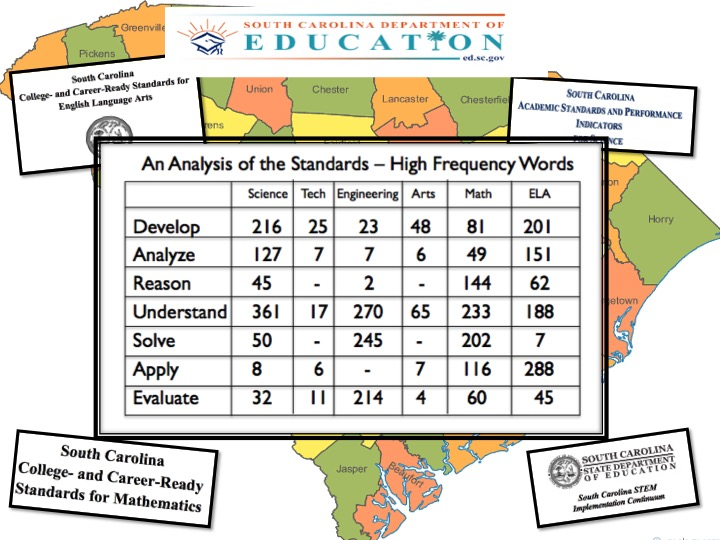

"Every student can be thinking at grade level."
We believe that to make a difference in student achievement with the SC CC Standards is to address the rigor of the thinking skills that thread these robust standards. Teaching students explicitly how to think - to analyze critically, to hypothesize with confidence, to clarify with purpose, to make inferences that matter is the mark of college and career-readiness. Grounded in the key elements of the SC CC Standards, this introductory overview explores the power of a mindful, literacy-filled curriculum across all disciplines. Using the key explicit thinking skills, rigor is front and center in this workshop.
Objectives and Outcomes:
- Celebrating the Hallmarks of the SC CC Standards
- Understanding the SC CC Standards Framework of Standards
- Lobortis vestibulum ut magna tempor massa nascetur.
- BA Focus on the Inquiry-based Literacy Standards
- Determining How to Unpack / Repack Layered Performance Tasks

Buy The Book